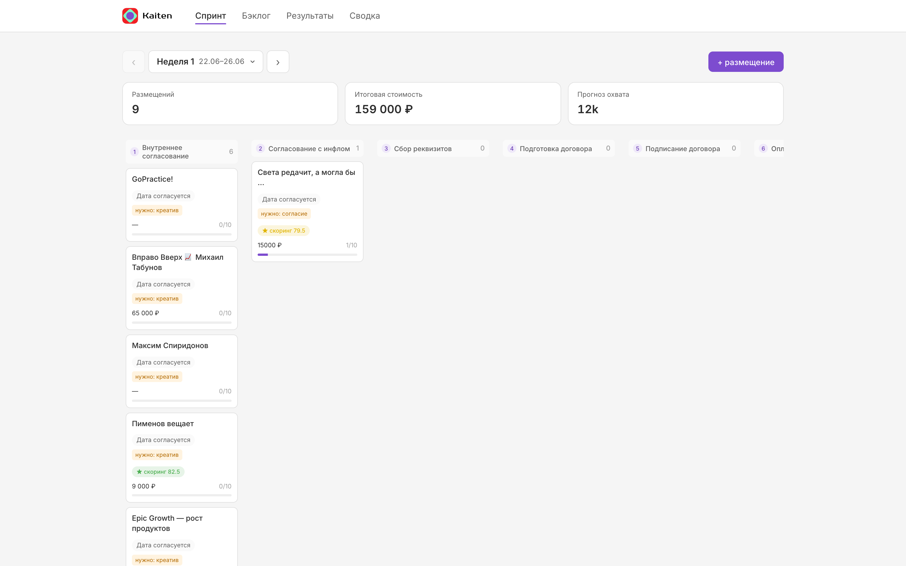
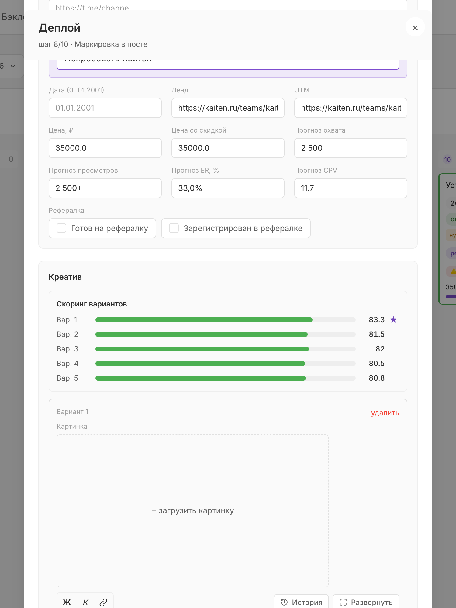
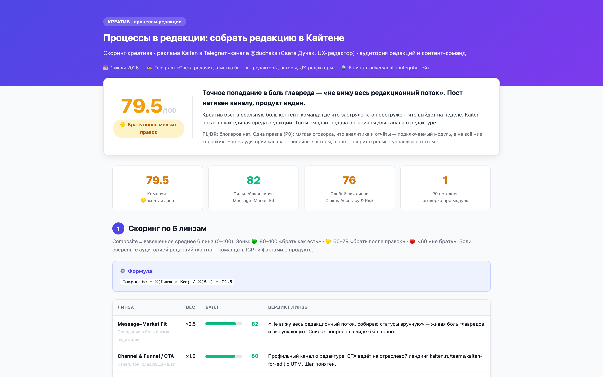

Воркшоп для команды
Мини-версия Кайтена под вашу цель
Как устроена платформа Kaiten Influence: продуктовые решения, архитектура, работа через агента. Разбор от идеи до продакшена, со всеми граблями.
Как устроена платформа Kaiten Influence: продуктовые решения, архитектура, работа через агента. Разбор от идеи до продакшена, со всеми граблями.
Живой инструмент, команда работает в нём каждый день.
Стек целиком на free tier: Vercel, Supabase, GitHub. Единственные расходы: сами размещения.
Инфлюенс-маркетинг это десятки параллельных сделок с блогерами, у каждой свой этап, артефакты и сроки.
Статусы устаревают в день создания. Никто не помнит, какая версия актуальная.
Креативы, счета и правки тонут в переписке. Поиск договорённости: 20 минут скролла.
Сроки и устные договорённости держит один человек. Он в отпуске: процесс стоит.
Нужен один экран, где виден весь процесс. Кайтен делает это для задач команд, я собрала то же самое для своего процесса: закупки рекламы у блогеров.
Никакого абстрактного таск-трекера. Доска повторяет воронку сделки с блогером, у каждого этапа свой обязательный артефакт.
10 этапов воронки, как колонки канбана
Артефакты этапов: креатив, реквизиты, договор, счёт, токен ERID, ссылка на пост, итоги. Пока артефакт не внесён, карточка не движется.
Счётчики бюджета и охвата, бейдж скоринга креатива, прогресс шагов на каждой карточке.

Правило одно: фича появляется только после того, как о неё споткнулись руками. Ни одной «на будущее».
Главное решение всей платформы. Браузер ходит в базу напрямую, безопасность держат RLS-политики и публичный ключ, который для того и создан.
Next.js 15, клиентские компоненты. Вся логика интерфейса и сохранения здесь.
PostgREST превращает таблицы в API автоматически. Ни одной строки серверного кода.
Код, история, снимок данных в sprints.json. Однажды этот бэкап спас все креативы.
Скорость: фича за часы. Ноль DevOps, ноль серверов, ноль расходов.
Логика живёт в клиенте, серверной валидации нет. Для внутреннего инструмента команды: честная цена.
Восемь инструментов, у всех бесплатный тариф закрывает нашу нагрузку.
Интерфейс, App Router, клиентские компоненты
Стили на дизайн-токенах Кайтена
Postgres, REST API, файловое хранилище
Хостинг, сборки, деплой из CLI
Код, история изменений, бэкап данных
Агент: код, креативы, скоринг, операции с базой
Маркировка рекламы, ERID, отчёты в ОРД
Проверка каналов перед закупкой: охваты, ER, накрутки
Фактически две таблицы. Всё, что фильтруется и считается: типизированные колонки. Всё живое: одно jsonb-поле.
placements, колонкиСчитаем бюджеты, охваты, CPV. Сортируем и фильтруем силами базы.
data jsonb, внутриКреативы, скоринг и голосовые комменты появились без единого ALTER TABLE.
Новая фича не требует миграции. Скорость эволюции продукта: максимальная.
Схему jsonb никто не проверяет, и его легко затереть целиком. Это выстрелило, разберём дальше.
Несколько человек редактируют одну карточку. Наивное «сохранить всю строку» перезаписывало чужие правки, и однажды так стёрлись все креативы.
id + updated_at всех карточекИтог: команда видит правки друг друга почти сразу, а трафик укладывается в бесплатные 5 ГБ Supabase с огромным запасом.
Однажды прод перестал сохранять данные. Симптом один, причин оказалось четыре, и все независимые.
vercel build --prod сборка локально→
2deploy --prebuilt загрузка готового→
3promote переключение прода→
4проверка: ключ в бандле + тестовая запись
Переменные с пометкой Sensitive не видны на этапе сборки, а NEXT_PUBLIC вшиваются именно тогда. Клиент уехал в прод без конфига.
Turborepo-кэш отдавал старую сборку, даже когда код изменился. Выглядит как «фикс не работает».
Облачная сборка идёт из GitHub, а четыре коммита с фиксами лежали только локально. Деплоился код без фиксов.
Продакшен-домен не переключился на свежий деплой сам. Новая версия жила, но по другому адресу.
Вывод, который стоил вечера: прод проверяем после каждого деплоя, а не верим зелёным логам сборки.
Руками через интерфейс можно всё: открыть карточку, заполнить поля, приложить файл, правки сохранятся у всей команды. Но через агента быстрее: одна фраза вместо десяти кликов.
Конвейер на каждое размещение. Порядок важен: сначала отбор текста по баллам, визуал получает только победитель.
На скрине: реальные баллы пяти вариантов для канала «Деплой». Побеждает вариант 1 с 83.3.

Спор о вкусе превращается в список правок с приоритетами. Каждый балл привязан к портрету аудитории и цитате из поста.
Баллы реального поста для канала «Света редачит». Composite = взвешенное среднее = 79.5
TL;DR и вердикт, таблица линз, матрица «персона × пост», риски с severity, план правок P0 и P1, методология. Открывается по ссылке из карточки.

Пост говорит «можно анализировать процессы» так, будто аналитика входит в базовый тариф. На деле отчёты в Кайтене: подключаемый платный модуль. Это риск по линзе Claims Accuracy: читатель приходит за фичей, которой нет в бесплатной версии, и уходит разочарованным. Лечится одной честной оговоркой в тексте.
Глазами такое не ловится: текст звучит отлично. Ловится проверкой каждого утверждения против фактов о продукте.
Моя роль: продуктовые решения, постановка словами, приёмка глазами. Роль агента: код, контент, деплой. Но два раза за проект этого оказалось мало.
Сохранение всей строки перезаписывало параллельные правки, креативы двух карточек обнулились. Восстановила из бэкапа в git, сохранение переписали на diff-патчи.
Урок: снимок данных в репозитории это не паранойя, а страховка.
Четыре независимые причины одновременно: env-переменные, кэш сборки, незапушенные коммиты, домен. «Сделай чтобы работало» тут бессильно, помог только разбор слой за слоем.
Урок: у сложного бага редко одна причина. Проверяй каждый слой отдельно.
Компетентность в такой работе: понимать, в каком из двух режимов ты сейчас, и вовремя переключаться из «попроси» в «разберись».
Первые два дня: скелет и канбан. Дальше: фичи по живым запросам команды, выходные честно пустые.
kaiten-influence.vercel.app
С интерфейсом или без.